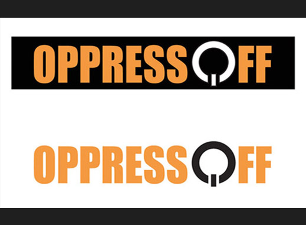
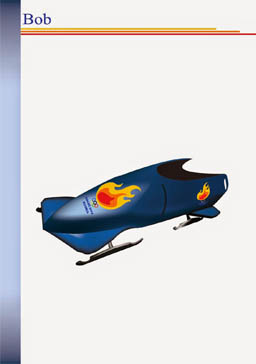

GRAPHIC DESIGN


- Project: "OPPRESSOFF"
- Description: This is the final project of my study. This project is about to make campaign based on the social problem. My socila issue was the oppression of the women in general, but focusing on the Middle East. As a part of the campaign I made logo design, design of the web-site(mockup), mobile application(also mockup), design of promotional ites, such ad poster and brochure.
- Tools: Adobe Illustrator and Adobe Photoshop
- Link: Full information about the project you can find in my blog
- Project: "UNDP Health Support Promotion"
- Description: This is design of the promotional items for the UNDP Health Support in Limpopo province in South Africa. I made this project while was working as a Graphic Design Intern for the UNDP Health Support. Those items was design to promote health program in South Africa.
- Tools: Adobe Illustrator and Adobe Photoshop
- Link: Full information about the project you can find in my blog

- Project: "Conference of Russian compatriots in Botswana"
- Description: This is the poster design for the first conference of Russian compatriots in Botswana. This conference took place recently after International Cosmonautics Day, so the main idea for the poster design was about space. And because it was conference of Russian compatrionts,conscept of second design was based on Russian flag's colors and aviation.
- Tools: Adobe Illustrator and Adobe Photoshop
- Link: Full information about the project you can find in my blog
- Project: "Fixing Games"
- Description: This is the project of my second year study. The project was about how can any issue be solved by using art and graphic desgin. As my issue I choose fixing games issue in moder football. The main idea of project was to make an installation art. My installation was based on the idea of pupets.
- Tools: Adobe Illustrator and Adobe Photoshop.
- Tools for Installation: Ball, football t-shirt, fishing lines, wire, cardboard
- Link: Full information about the project you can find in my blog


- Project: "Logo study"
- Description: On part of my study process was about logo study. In this project we made a new design of existing logo and used it in the design of the promotional items of the brand. For my project I choose to redesign logo of the Olympic Games in Sochi 2014
- Tools: Adobe Illustrator
- Link: Full information about the project you can find in my blog